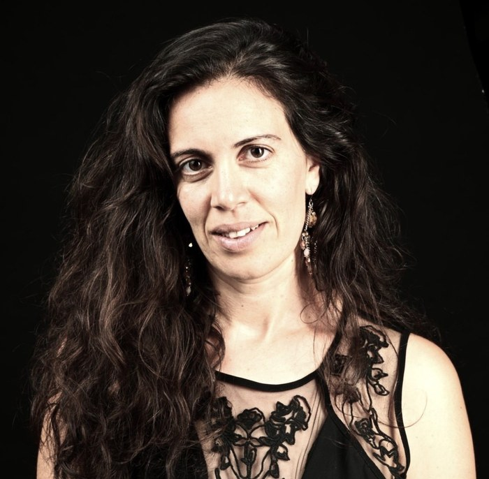
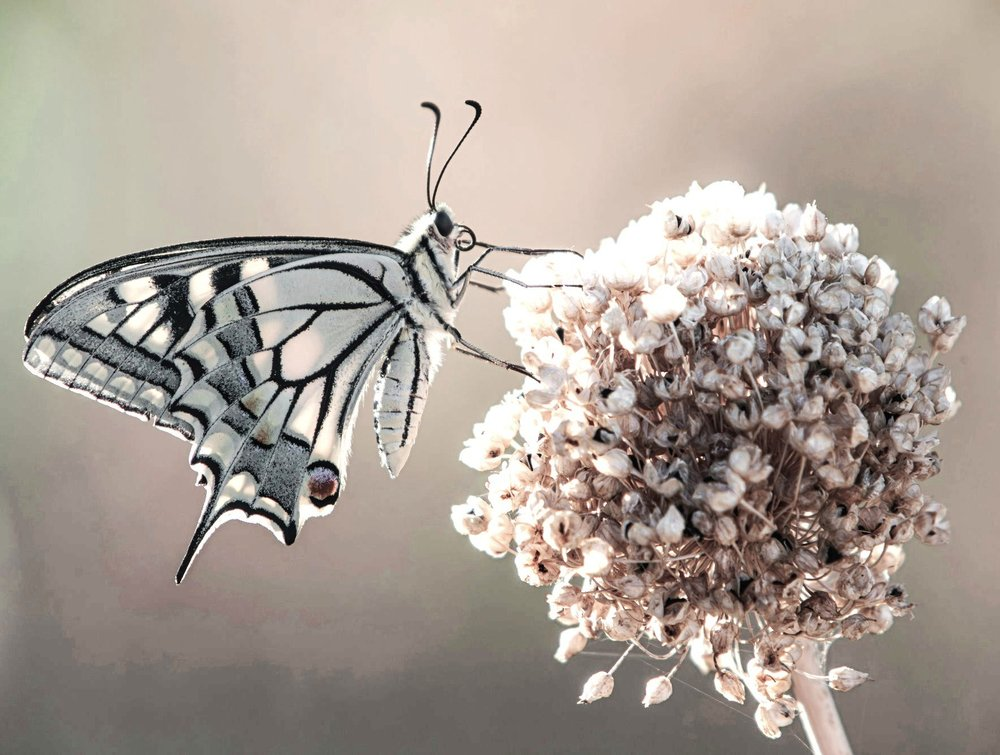
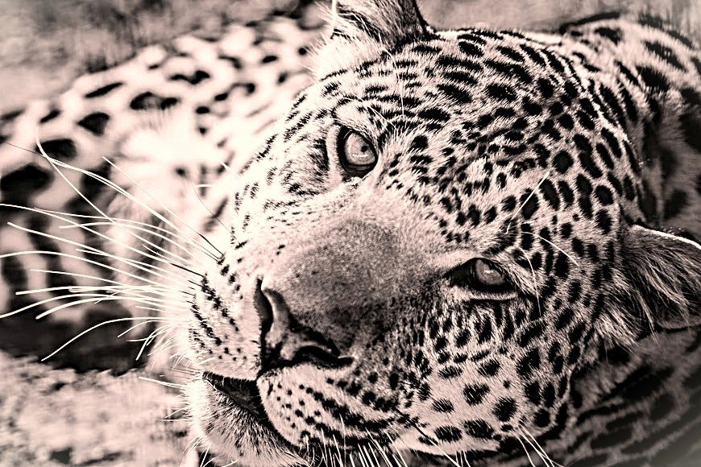
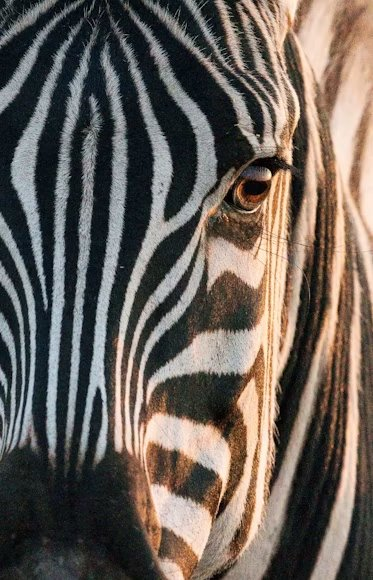
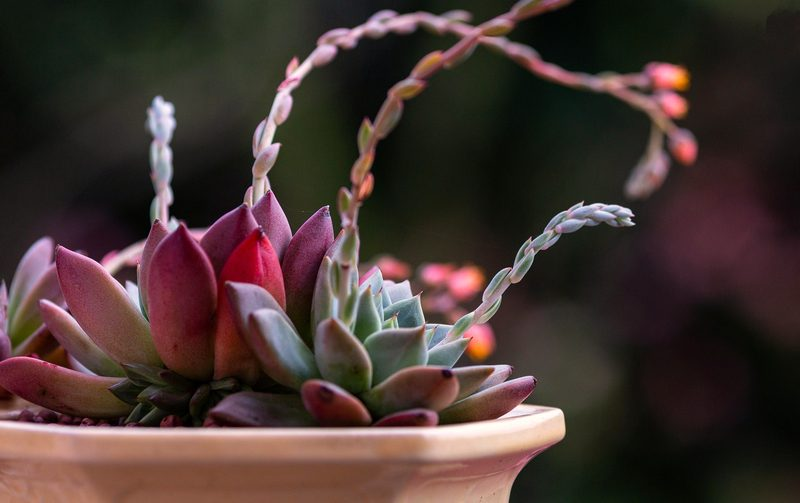
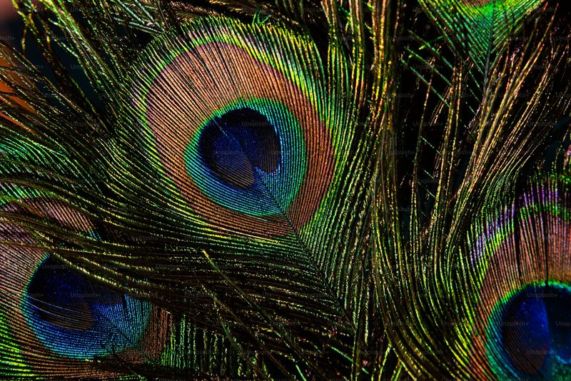
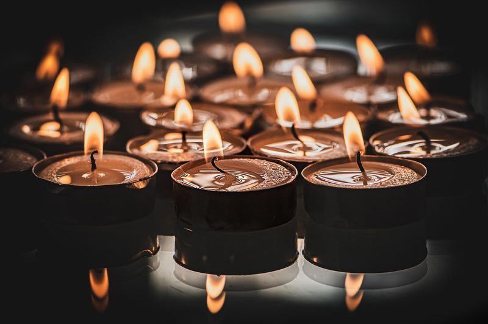
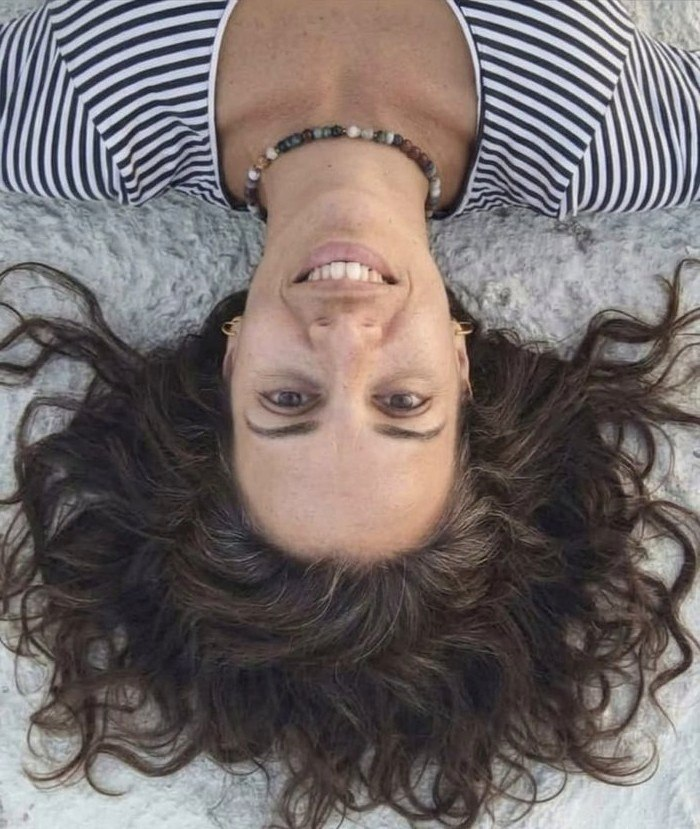
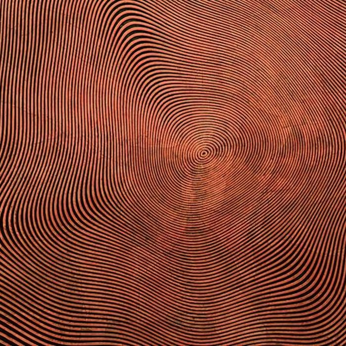
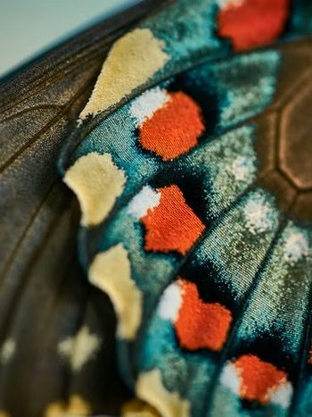

✦מלווה אנשים במסע לחופש✦
להרחבת בחירה בחייהם
✦להשתחרר מהתמכרויות יומיומיות✦
דרך ליווי אישי, הרצאות וסדנאות
חמלה — אהבה נדיבה

בחירה — מי אני רוצה להיות?

נוכחות — להאט ולשהות

יש אפשרות לעשות קפיצות בחיים למימדים חדשים

תהליך 1:1 להרחבת הבחירה — לקילוף אמונות, זיכרונות ודפוסים, ולחיבור למי שאת/ה באמת.
לתוכניות הליווי →
ערבים חווייתיים על פחד, בריחה, התמכרויות יומיומיות — והחופש לבחור אחרת.
על ההרצאה →
עבודה קבוצתית עמוקה, בקצב שמאפשר לתהליך להתרחש — יחד.
בקרוב →תרגול לחיבור לגוף, לרגש ולרצון — לקחת הביתה ולתרגל ביום־יום.
בקרוב →מסך, אוכל, שינה, קשר לא מחובר — להכיר את הדפוסים ולמצוא דרך חזרה לבחירה.
על ההרצאה →כשהתחלתי את האימון עם ריני, לא שיערתי עד כמה האימון יהיה משמעותי עבורי. צעד אחר צעד, בתוך מרחב בטוח, מכיל ולא שיפוטי, למדתי לעצור. למדתי להקשיב. למדתי להיות נוכחת באמת עם עצמי.
מאמנת שמביאה שילוב נדיר של יידע, מקצועיות, רגישות עמוקה ונוכחות מלאה. כבר מהמפגש הראשון הרגשתי שאני נמצאת מול אדם מיוחד שמקשיב לא רק למילים שלי, אלא גם למה שנמצא ביניהן — למה שהלב עדיין לא הצליח לומר בקול.
ריני ידעה איך להחזיר לי את המילים ברגישות, עדינות ודיוק — האמינה ביכולת שלי למצוא את התשובות שבתוכי. האמונה שלה בי הפכה בהדרגה גם לאמונה שלי בעצמי.
בזכות הליווי, למדתי להקשיב לגוף ולרגשות שלי מבלי להיבהל מהם. למדתי שאפשר לפגוש גם פחד, עצב ואבל ולהישאר שלמה. גיליתי שאני אדם שלם, גדול מסך כל חלקיו, ושגם רגשות מאתגרים הם חלק מהדרך.
תהליך האימון עם ריני אפשר לי לראות את המציאות באופן חדש — התחלתי לראות אפשרויות. למדתי להחזיק בו-זמנית גם חזון וגם פחד, גם כאב וגם תקווה. למדתי שהקשבה אמיתית לעצמי מעניקה לי יציבות, חופש ובחירה.
למדתי שהגוף, הנפש והזיכרונות קשורים זה בזה, ושכשמקשיבים להם בכבוד ובסבלנות, מתחיל תהליך עמוק של ריפוי וצמיחה.

בת 41, מתגוררת באזור ירושלים, אמא לחמישה. לומדת, חוקרת ומעמיקה בעולם, באנשים, ובדבר הזה שנקרא "החיים". לאתגר את עצמי, ולרדת עד למצולות — כדי להבין לעומק, ולחזור לספר. על המסע, על איך להיות בטוב ולחיות מתוך חופש ובחירה, עם פחות פחד, אשמה ובושה.
מתוך המסע שלי מהתמכרות אל גמילה, פגשתי מקרוב מה זה להיות כלוא בתוך חיים שמובילים אותך למקומות שלא רצית להיות בהם — ומה זה למצוא את הדרך החוצה.
מתוך הכאב הזה גיליתי שהתמכרות איננה חולשה — היא מנגנון הישרדות של גוף שלא יודע איך להכיל כאב.
היום אני מתעוררת עם שחר בתחושת הודיה, חיה מתוך הרבה יותר בחירה — ומלווה אנשים שרוצים את החופש לבחור ולחיות בהנאה, בתחושת משמעות ושלווה. אני עוסקת ב-12 הצעדים, בסאטיה, בתקשורת מקרבת ובמדיטציה.
הרחבת הידע על המנגנון ההישרדותי ותגובתי
תרגול מודעות ונוכחות דרך חיבור לגוף

הגדרת רגשות והבנה איך הם משרתים אותנו
התבוננות על עצמנו דרך דפוסים והרגלים

הבנה של הסיפור שאנחנו מספרים לעצמנו
חשיפת האמונות והפרדיגמות שאימצנו
יש בה איכויות יוצאות דופן — היא מכבדת את הקצב של האדם שמולה, יוצרת מרחב שמאפשר להסיר הגנות, לפגוש גם את המקומות הפגיעים ביותר ולהרגיש בטוחים להמשיך לצעוד.
אני מסיימת את התהליך עם יותר מודעות, יותר הקשבה, יותר חמלה ויותר אמון בעצמי. אני יוצאת ממנו עם כלים שילוו אותי שנים רבות, אבל יותר מכל — עם דרך חדשה להיות בקשר עם עצמי ועם אחרים.
יש מתנות שמקבלים ברגע אחד, ויש מתנות שממשיכות להתגלות הרבה אחרי שהתהליך מסתיים. ריני מתייחסת לאימון כאל שליחות — אני מודה לה על האמונה בי ועל היכולת לראות אותי.
בעיניי, זו המשמעות האמיתית של האימון עם ריני — לגלות, בעדינות ובאומץ, את מי שאת ואת הכוחות הקיימים בך.